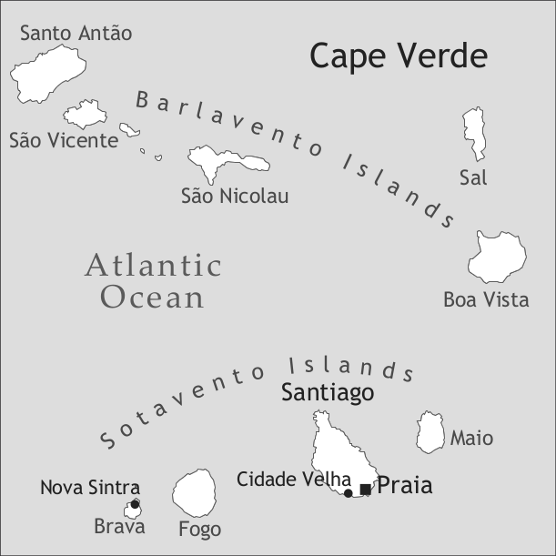

by Jürgen Lang

The archipelago of Cape Verde is situated approximately 500 km to the west of Dakar (Senegal) in the Atlantic Ocean. Among its nine inhabited islands, Santiago in the Leeward group (Sotavento) is the most important by surface (991 sq km), population (some 250,000 people), and history (from the discovery around the year 1460 onwards). Both the old capital (Cidade Velha, previously known as Ribeira Grande) and the new capital (Praia) are located on Santiago.
For historical reasons, the Portuguese-based Santiago Creole is closely related to the creole varieties on the archipelago’s other islands (see Baptista (2013) on Cape Verdean Creole of Brava, and Swolkien (2013) on Cape Verdean Creole of São Vicente), and also to the Portuguese-based creoles of Guinea-Bissau and Casamance (see Intumbo et al. (2013) and Biagui & Quint (2013)).
Santiago Creole is the mother tongue of almost all of the island’s inhabitants. Another 250,000 speakers of Santiago Creole live in diaspora communities around the Atlantic Ocean, mainly in the USA (Boston), São Tomé and Príncipe, Portugal, Angola, Senegal, and the Netherlands.
The discovery of the Cape Verdean archipelago between 1456 and 1460 provided the Portuguese with a valuable port of call on the maritime routes along the African coast and, soon afterwards, towards the East Indies, the West Indies, and Brazil. In order to attract settlers and to guarantee Portuguese presence, royal privileges granted in 1466 and 1472 gave future colonists of Santiago the right to trade under favourable conditions on the west coast of Africa (cf. HGCV, Corpo documental I, 1988: 19–28). In Santiago and the nearby island of Fogo, cotton was grown and made into cloth and horses were raised. On the authority of the privileges, the colonists traded along the coast, exchanging the cloth and the horses for African goods and slaves. Only a minority of the slaves brought to Santiago and Fogo remained there, as the majority were resold to Portuguese, Spanish, and Italian merchants who dispatched them to the European and American markets. The colonists had arrived without servants and without their spouses. A close cohabitation between the white master and several people of African origin (female partner(s) and servants of both sexes) must therefore have commenced immediately. Children born out of such unions were often freed. So from the second generation onwards, there were more “mulattos” than whites. The increase in the population of Santiago and in the wealth of its ruling class (the moradores) was only to last as long as the Portuguese were able to protect the monopoly along the West African coast, which the treaties of Alcáçovas (1479) and Tordesillas (1494) had granted them. From 1565 onwards, they became less and less successful at this. The African rulers increasingly dealt directly with the Dutch, the English, and the French. An economic crisis with deep repercussions for Santiago society ensued. Most of the landowner-merchants left the island and freed a large proportion of their slaves in order to relieve themselves of the responsibility of feeding them. Some of these emancipated slaves left for other islands (Brava, Santo Antão, São Nicolau) in search of land that could support them. A system of slavery was replaced with a system of tenancy with small tenants working the lands of absentee landowners. On the islands, the social boundaries between the freed and the enslaved and between whites, mixed, and blacks became blurred. Due to the isolation of the archipelago that took place at the end of this first but crucial period of the island’s history, the ethnic composition of the population of Santiago has changed little since that time.
In 1582, the report by sargento-mor Francisco de Andrade to the King provides a reliable estimate of the population of Santiago at the beginning of the crisis. Some 13,400 people were then living in Santiago. The two urban centers, Ribeira Grande and Praia, accommodated more than half the entire population of the island (cf. HGCV I 1991: 230–236), with 708 vizinhos (‘households’) and around 6,700 slaves living in them. In the inland areas there were some 600 whites and free mulattos and some 400 emancipated Africans who held about 5,000 slaves in their properties and houses. Unfortunately, there are no documents that provide direct information on the origin of the slaves. But there is indirect evidence that speakers of Wolof formed the majority amongst the first groups of slaves who disembarked at Santiago (Lang 2006). Later on, when the competition of the other European powers forced the Cape Verdean merchants to move the center of their activities more to the South, speakers of other Atlantic languages (Diola, Manjaku, Mankanya, Balanta, Papel, Bijago, Temne, etc.) and of Mande languages (especially Mandinka) must have become more and more numerous among the slaves who were brought to Santiago.
Santiago Creole certainly arose during this first period of the island’s history. More acrolectal varieties may have originated in the two urban centres and ports of the island, where Africans lived in close contact with their masters, and more basilectal ones in the countryside, where freed mulattos supervised the African slaves who grew cotton, raised horses, and wove cloth. At the time of the crisis at the end of the 16th century, the relative levelling in the remaining population of the differences between rich and poor and between town and country must have involved a similar levelling in linguistic terms and one that certainly favoured the more rural and basilectal varieties of Santiago Creole.
In 1975, the former Portuguese colonies of Cape Verde and Guinea-Bissau became a single independent state. However, six years later, a coup d’état in Guinea-Bissau brought this alliance to an end. Since then, the Cape Verdean archipelago has formed the independent Republic of Cape Verde. In 1991, its one-party system was substituted by a multi-party system.
Although Portuguese is still the only official language of Cape Verde, the local inhabitants – nearly half a million people – almost all speak as their first language a Portuguese-based creole, which varies from island to island. So the term diglossia fits the overall linguistic situation very well. Those who have emigrated and their descendants (at least half of the Cape Verdeans) do not all have a complete command of the creole. In Santiago there is some geographic variation, the north-western region of Santa Caterina being considered the most conservative, and much social and register variation is found in Praia between basilectal and more Portuguese-influenced varieties of the educated people, who, due to professional reasons, speak much Portuguese.
Serious efforts are being made to turn Cape Verdean Creole into the second official language of the country. In 1998, an official orthography (Alfabeto unificado para a escrita do Cabo-Verdiano, ALUPEC) was adopted, on experimental terms, for a period of five years. It has recently been confirmed as the only officially recognized writing system for Cape Verdean Creole. In this chapter, all examples are given in ALUPEC. Creole has also been declared a language of administration and education, but this decision is still waiting for implementation. There are no television channels, radio stations, or newspapers functioning entirely in Creole, but Creole broadcasts and Creole articles can be found regularly in these media.
The first known grammar of Santiago Creole was written in 1885 by António de Paula Brito, an inhabitant of the island, and was published in 1888 by the Portuguese linguist Adolfo Coelho. It is written in Santiago Creole (left column) and Portuguese (right column). Only in 1982 did a book appear, the Diskrison strutural di lingua Kabuverdianu by the Cape Verdean linguist Manuel Veiga, in which the description of Santiago Creole was kept strictly separate from the description of other varieties. The most recent published grammar of Santiago Creole is by Nicolas Quint (2000). Quint is also the author of the first dictionary dedicated exclusively to the Santiago variety (1996); he has repeatedly enlarged and recast it (see for instance Quint 1999). The most extensive dictionary of Santiago Creole up to now is Lang (ed.) 2002.
Santiago Creole has eight oral vowel phonemes (see Table 1), which all have a nasal counterpart. The functional load carried by the /ɐ/:/a/ opposition is relatively small. In Table 1, the symbols used in the ALUPEC orthography are given in angle brackets.
|
Table 1. Vowel phonemes |
|||
|
front |
central |
back |
|
|
close |
i <i> |
u <u> |
|
|
mid |
e <e> |
ɐ <a> |
o <o> |
|
open |
e <é> |
a <a> |
ɔ <ó> |
For the sake of coherence and in order to help pronunciation, I extend the use of the graphic accent to the open /a/, writing e.g. karapáti ‘tick’, as opposed to karapati ‘to cling to sb/sth’, with /ɐ/ in the stressed, penultimate syllable. The nasal vowels are represented in ALUPEC by the same symbols as their oral counterparts followed by an <n>.
There are several reasons to consider the vowel system as having only three degrees of aperture rather than four: /e/ and /ɔ/ are extremely open so that even the mid vowels /e/ and /o/ are frequently mistaken for open vowels by outsiders; the three open vowels only occur in stressed syllables; all three open/mid oppositions are used to distinguish between nouns and verbs, e.g. karéka ‘bald head’ vs. kareka ‘to go bald’, karapáti ‘tick’ vs. karapati ‘to cling to sb/sth’, frónta ‘misfortune’ vs. fronta ‘to suffer a misfortune’ (see Quint 2001).
In unstressed word-final position all oppositions in degree of aperture are neutralized. The three resulting archiphonemes are normally pronounced as [i], [ɐ], and [u]. The numerous diphthongs of Santiago Creole can all be interpreted as sequences of two simple vowels.
The variety of Santiago Creole described here has 17 oral and three nasal consonantal phonemes. All oral consonants have prenasalized counterparts (see Lang 2007 for the role of nasality in Santiago Creole). In very basilectal varieties, there are no voiced fricatives as separate phonemes. Instead, there is a fourth nasal consonant /ŋ/ in words of African or onomatopoeic origin (meso- or acrolectal varieties have replaced it by a prenasalized /g/, as in ŋánha ['ŋaɲɐ] ‘interior part of a corncob’, becoming ngánha ['ŋgaɲɐ]).
|
Table 2. Consonant phonemes |
|||||||
|
bilabial |
labio-dental |
alveolar |
post-alveolar |
palatal |
velar |
||
|
plosive |
voiceless |
p |
t |
k |
|||
|
voiced |
b |
d |
g |
||||
|
nasal |
m |
n |
ɲ |
||||
|
trill |
r |
||||||
|
fricative |
voiceless |
f |
s |
ʃ |
|||
|
voiced |
v |
z |
ʒ |
||||
|
affricate |
voiceless |
c |
|||||
|
voiced |
ɟ |
||||||
|
lateral |
l |
ʎ |
|||||
In the official Cape Verdean orthography ALUPEC, these consonants are represented by the same symbols with the exception of the post-alveolars and palatals – these are represented (from top to bottom) by <nh, x, j, tx, dj, lh>. Prenasalized consonants receive an <n> before the letter(s) which represent(s) the corresponding oral consonant.
Most syllables have a consonantal onset. In most cases there is a single consonant in the onset, sometimes there are two (kre ‘to want’, kláru ‘clear’, stángu ‘stomach’) or even three (spreme ‘to squeeze’, splika ‘to explain’). Syllable codas never consist of more than one consonant, and only /r/, /l/, or /s/ are admitted in this position.
Word stress is not fixed, but placed on the penultimate syllable in most words. There is relatively little variation in pitch and syllable length within a (declarative) sentence in Santiago Creole.
There are no morphological case or gender distinctions in Santiago Creole nouns.
Female sex of animates may be indicated by specific lexemes (fidja ‘daughter’ as opposed to fidju ‘child’, badjadera ‘female dancer’ as opposed to badjador ‘(male) dancer’, etc.) or by adding fémia ‘female’ (fidju fémia ‘daughter’ as opposed to fidju mátxu ‘son’).
Plural is generally indicated on the first element of the noun phrase where such an indication is possible. When this element is a noun or an adjective, plural is marked by an -s in words ending in a vowel and by -is in words ending in a consonant (fidjus ‘children’, badjadoris ‘dancers’, etc.). However, like other grammatical markers, the plural marker is only used when the corresponding semantic value is not self-evident from the context.
Some adjectives such as bunitu ‘pretty’ may end in -a when used to characterize female persons (un badjadera bunita ‘a pretty (female) dancer’). Expressions such as un kása bunita ‘a pretty house’ (with adjective concord according to the gender of Portuguese casa ‘house’) or nhas fidjus ‘my children’ (with a plural marking on the possessive) only occur in acrolectal varieties. Adjectives may precede or follow the noun. As in Romance languages, the preceding adjective modifies the meaning of the noun (as in un bon puéta ‘a poet writing good poetry’), the one which follows modifies the referent of the noun (as in un puéta bon ‘a poet who is good, for whatsoever reason’).
In comparative constructions of equality, the standard is marked by sima:1
(1) Es kása li e áltu sima kel la.
DEM house here be high as DEM there
‘This house is as high as that one.’
Comparative constructions of inferiority are normally avoided in favor of constructions of superiority (‘A is higher than B’ instead of ‘B is less high than A’). In comparative constructions of superiority, the adjective is marked by más ‘more’ and the standard by ki or di ki:
(2) Es kása li e más áltu (di) ki kel la.
DEM house here be more high than DEM there.
‘This house is higher than that one.’
Superlative is expressed by the same construction with a standard marked by di:
(3) Es kása li e más áltu di (es) tudu.
DEM house here be more high than (DEM) all
‘This house is the highest of all (these).’
There is a preposed indefinite article un (with a plural uns), but no definite article:
(4) a. Un bes un ómi di lonji bá kása di un mudjer.
one time ART.INDF man of far.away go house of ART.INDF woman
‘One time, a man from far went to the house of a woman.’
b. Mudjer resebe -l ben resebedu.
woman receive -3SG well receive.PASS
‘The woman received him very well.’
The feminine form of the Portuguese indefinite article (unstressed uma) became a stressed indefinite article for augmentation. (The language also possesses two augmentative suffixes -on and -óna, which frequently co-occur with the augmentative indefinite article):
(5) Na kel baskudja, N diskubri uma libron.
in DEM rummage.about 1SG discover ART.INDF.AUGM book.AUGM
‘In that rummaging through, I discovered a huge book.’
There are two demonstratives, both admitting pronominal and adnominal use, one with a plural form and neutral with respect to the distance from the speaker (kel, plural kes) and the other invariable and for proximity to the speaker only (es). Both may be followed by a spatial adverb: kel (kása) li ‘this (house) here’, kel (kása) la ‘that (house) over there’ and es (kása) li ‘this (house) here’ (see examples 1–3).
The independent pronouns carry stress, and the subject pronouns, object pronouns, and adnominal (preposed) possessives are unstressed (see Table 3). The a- in the independent personal pronouns is an optional topic marker.
|
Table 3. Personal pronouns and adnominal possessives |
||||||
|
dependent subject |
dependent object |
independent pronouns |
adnominal possessives |
possessive pronouns |
||
|
1sg |
N |
-m |
(a)mi |
nha |
di meu |
|
|
2sg |
bu |
-(b)u |
(a)bo |
bu |
di bo |
|
|
2sg.pol.m |
nhu |
(a)nho |
di nho |
|||
|
2sg.pol.f |
nha |
(a)nha |
di nha |
|||
|
3sg |
e(l) |
-l |
(a)el |
si~se |
di sel |
|
|
1pl |
nu |
-nu |
(a)nos |
nos |
di nos |
|
|
2pl |
nhos |
(a)nhos |
nhos |
di nhos |
||
|
3pl |
es |
-s |
(a)es |
ses |
di ses |
|
Algen ‘somebody’ may be used as an indefinite subject, but a passive construction is normally preferred when the agent cannot or should not be specified:
In polite 2SG there are no unstressed adnominal possessives. In 2PL and polite 2SG, the stressed independent pronouns must be used for object function. A possessive pronoun is illustrated in (7)
(7) Kel kása e di kenha? – E di meu.
DEM house be of whom be mine
‘Whose house is this? – It is mine.’
As can be seen in Table 3, the possessive pronouns are made up of the preposition di ‘of’ followed by elements which are either identical to independent personal pronouns or which have no additional use. The same forms serve as stressed adnominal possessives: kása di meu ‘my house’, kása di nho ‘your house’, etc.
Possessor constructions with two nouns vary in form but not in meaning: kása di pai, kása-l pai, kása pai ‘the house of the father’. The form -l, though probably of Wolof origin (cf. Lang 2009: 135–139), is felt to be a shorter variant of di.
The preposition ku ‘with’ is used for (pro)noun conjunction: mai ku pai ‘the mother and the father’, ami ku bo ‘I and you’.
The numerals from 1 to 10 are un, dos, tres, kuátu, sinku, sax ~ sais, séti, oitu, nóvi, dés.
There is no person, number, or gender concord in Santiago Creole verbs. Unless otherwise indicated, unmarked forms of stative and dynamic verbs yield different temporal meanings:
(8) a. Es ten dos fidju.
3PL have two son
‘They have two children.’
b. Es perde dos fidju.
3PL loose two son
‘They lost two children.’
In some verbs, the unmarked form has present-time reference when it is used with a stative meaning and past reference when treated as a dynamic verb. Compare:
Santiago Creole has six verbal markers relating to aspect, mood, tense, and voice. Mood and aspect are expressed by preverbal particles (in this order), and relative tense and voice are expressed by verbal endings. The three preverbal markers are ál (‘desire’), sa (‘progressivity’), and ta (‘imperfectivity’). The three verbal endings are -ba (‘anteriority’), -du (‘passivity’), and -da (‘anteriority + passivity’).
The modal marker ál has an alternative epistemic use which expresses a supposition. The inherent imperfectivity of a desire is never expressed by an additional ta. But sa ta may follow an epistemically used ál in order to express progressivity:
(10) a. Dios ál dá -u sórti!
God MOD give -you luck
‘May God make you lucky!’
b. Ómi ál sa ta trabádja.
man MOD PROG IPFV work
‘The man will be working [now].’
Fitting the fact that progressivity implies imperfectivity, sa is always followed by ta, but, of course, ta is not always preceded by sa.
‘Future’ and ‘habituality’ are subsumed under ‘imperfectivity’. Es ta trabádja may thus mean ‘They work’, ‘They will work’, or ‘They use to work’. Stative verbs thus do not preclude the use of the imperfectivity marker ta. They simply make it superfluous whenever there is no need to express some more specific variety of imperfectivity such as ‘future’, ‘habitual’, etc.: Es kre kunpanheru ‘They love each other’, but Es ta kre kunpanheru ‘They will love each other’.
The form -ba, often described as a past marker, more precisely indicates ‘anteriority’ (with respect to the moment of utterance in stative verbs and with respect to another past event in dynamic verbs):
(11) Es tenba tres fidju.
3PL have.ANT three child
‘They had three children.’
(12) E lenbra di kusa ki sáibu flába -el.
3SG remember of thing which wise.man tell.ANT -3SG
‘She remembered what the wise man had told her.’
In hypothetical constructions which present the relevant condition as being unattainable, -ba, does not mark a temporal distance (‘anteriority’) but instead marks a modal distance (‘irreality’):
The form -du is mainly used in order to avoid mention of the agent and very often to give the clause an impersonal meaning:
(14) Fládu ma Kabuberdiánus gosta di grógu.
say.PASS COMP Cape Verdeans be.fond of rum
‘Cape Verdeans have been said to be fond of rum.’
-da is a contraction of -du + -ba, which in Brito’s grammar from 1885 (see §3 above) is still -duba (fláduba ‘it had been said’ instead of modern fláda).
Table 4 summarizes the use of the verbal markers with dynamic and stative verbs, and gives the Portuguese etymons of the Santiago Creole markers:
|
Table 4. Tense-Aspect-Mood-Voice markers |
|||
|
lexical aspect |
tense/aspect/mood |
Portuguese etymon |
|
|
ta [tɐ] |
dynamic |
simple present habitual present future |
está, 3SG of the copula estar in the verbal periphrasis estar a fazer |
|
stative |
habitual present future |
||
|
sa ta [sɐtɐ] or s'ta [stɐ] |
dynamic |
progressive present |
está, 3SG of the copula estar in the verbal periphrasis estar a fazer |
|
ál ['al] |
stative and dynamic |
present desire present supposition |
há de, from the 3SG of the verbal periphrasis haver de fazer ‘to have to do’ |
|
-ba [bɐ] |
dynamic |
pluperfect |
-va, imperfect 3SG ending in verbs with infinitives in –ar or (aca)ba, 3SG of the verb acabar ‘finish’ |
|
stative |
simple past |
||
|
-du [du] |
dynamic |
past passive |
-do, ending of regular passive participles |
|
stative |
present passive |
||
|
-da [dɐ] |
dynamic |
pluperfect passive |
(-du + -ba) |
|
stative |
simple past passive |
||
Except for the cases mentioned so far, all theoretically conceivable combinations of markers do occur (but remember that -da is itself a fusion of -du and -ba and thus may not combine with -du or -ba). The semantic results of such combinations are generally predictable.
Except in very rare cases, Santiago Creole always uses a copula in clauses which assign a characteristic to something (15), identify something with something else (16), or locate something somewhere (17). As in Portuguese (and Spanish, and Catalan), Santiago Creole has two copulas, one for characterizations, identifications, and locations, the validity of which is presented as being limited in time (sta, anterior stába), and another one for characterizations, identifications, and localizations for which no such limitation is envisaged (e, anterior éra, in complementary distribution with ser, anterior sérba, used after auxiliary verbs, verbal particles, and in prepositionally introduced subordinate clauses). Each of the three cases is illustrated by the paired sentences under (15), (16), and (17):
(15) a. Si duénsa e grávi.
3SG.POSS desease be serious
‘His disease is serious.’
b. Pamódi ki bu sta tristi?
why COMP 2SG be sad
‘Why are you sad?’
(17) a. Mudjer éra di Práia.
woman be.ANT of Praia
‘The woman was from Práia.’
b. Djánta sta na mésa.
dinner be in table
‘Supper is on the table.’
Surprisingly, Santiago Creole makes a similar distinction between ten (without temporal limits) and tene (suggesting such limits) for ‘to have’:
(18) a. Djon ten dinheru.
John have money
‘John has money (= John is rich).’
b. Djon tene dinheru.
John have money
‘John has money (= John has money with him).’
There are at least 26 verbal periphrases in Santiago Creole: three express modality, three express voice, two express relative tense or “taxis”, and eighteen express aspectuality. Only the first two of the three modal periphrasis pode fase ‘can do’, debe fase ‘must do’, and ten ki fase ‘have to do’ are regularly used for epistemic purposes:
(19) E pode/debe sta duenti.
3SG can/must be ill
‘He may/must be ill.’
Clausal negation is achieved by using ka 'not':
(20) Na mudjer ka ta konfiádu!
in woman not IPFV trust.PASS
‘Never trust a woman!’
As can be seen from the preceding example, ka is normally placed in front of the verb and the verbal particles. There are two exceptions to this rule: (i) Negative imperatives are formed by placing ka in front of the subject pronoun (see example 32 below). (ii) Ka normally follows e, the only unstressed verb form of Santiago Creole:
(21) Es ómi li e ka Djon.
DEM man here be not John
‘This man here is not John.’
In negative clauses with indefinite pronouns ka co-occurs with the indefinite pronoun:
(22) N ka odja ningen.
1SG not see nobody
‘I didn't see anybody.’
The order of syntactic elements in the Santiago Creole clause is SVO. Objects in clauses with ditransitive verbs normally occur in the order indirect object + direct object and are not marked by prepositions (double object construction):
There are no reflexive pronouns in the language. Reflexivity is expressed by kabésa ‘head’ (24), and reciprocity by kunpanheru ‘comrade’ (25):
(24) Kel trópa nforka kabésa pa es ka obriga -l trai si kolégas.
DEM soldier hang head for 3PL not force -3SG betray his comrades
‘This soldier hung himself in order to avoid being obliged to betray his comrades.’
(25) Vióla ku violon ta parse ku kunpanheru.
vióla with violon IPFV resemble with comrade
‘The “vióla” and the “violon” [two types of guitars] resemble each other.’
Verbs in imperative use do not take the 2SG subject pronoun (cf. 26a). Subject pronouns are however used with 2PL imperatives (cf. 26b) and in the prohibitive (cf. 32):
(26) a. Plánta midju!
cultivate corn
‘Cultivate corn!’
b. Nhos plánta midju!
2PL cultivate corn
‘Cultivate corn!’
Yes-no questions are distinguished from statements only by a rising intonation. The question words in content questions are normally fronted (27), but can also remain in place under certain conditions (28):
(28) So bu fla -m e módi!
only 2SG tell -1SG be how
‘Just tell me how it is!’
The question words are kál ‘which’, kenha ‘who’, kusê ‘what’, undi ‘where’, ki ténpu ‘when’, módi ‘how’, kántu ‘how much’, and pamódi ‘why’.
Focused elements are fronted and followed by the complementizer ki (29). When, in addition, the copula precedes the focused element, we clearly have a cleft construction. Focusing without the copula is however more frequent (and even more so when the focused element is a question word):
Clauses are coordinated by the following conjunctions: y… ‘and…’, má(s)… ‘but…’, o… ‘or…’, o…o… ‘either… or…’, (nen…) nen… ‘(neither…) nor…’. Asyndetic coordination of clauses is much more frequent than coordination by y. There are three complementizers: neutral ki ‘that’ (30) and two complementizers which introduce object clauses after verbs of saying, thinking, and perception, i.e. assertive ma ‘that’ and interrogative si ‘whether’. In an enumeration of object clauses, ma and si may be replaced by ki from the second clause onwards (31):
(31) E fla ma e mesteba bá Práia
3SG say COMP 3SG need.ANT go Praia
y ki e ta saíba sais óra.
and COMP 3SG IPFV start.ANT six hour
‘He said that he had to go to Praia and that he would leave at six o’clock.’
Object clauses which express a wish, an expectation, or an anticipation of the main clause’s subject are introduced by pa ‘for’:
(32) Ka bu kume inda, spéra pa buláxa molse primeru!
not you eat yet wait for cookie get.soft first
‘Don't eat yet, wait until the cookie has got soft!’
Adverbial clauses are headed by subordinating conjunctions such as embóra ‘though’, (kel)óki ‘when’, inkuántu ‘while, whereas’, kántu ‘when’, purki, pamodi ‘because’, komu ‘as’, sima ‘as soon as’, si ‘if’, sinon ‘otherwise’, timenti ‘so long as’, and a great number of complex subordinating conjunctions such as afin di ‘in order to’, alen di, pa len di ‘in addition to’, etc.
Relative clauses, i.e. clauses which modify a noun, are introduced by the complementizer ki:
In cases where the referent of the antecedent functions as the subject or direct object of the relative clause, no resumptive pronoun occurs:
(34) Kántu si mudjer korda, e txoma Jáni ki ka kudi.
when 3SG.POSS woman awake 3PS call Jáni COMP not answer
‘When his wife woke up, she called Jáni, who didn’t answer.’
This may even occur in other cases when there is no danger of misunderstanding:
In all other cases, a resumptive pronoun is used (no preposition stranding):
(36) Bu konxe ómi ki N papia ku el.
2SG know man COMP 1SG speak with 3SG
‘You know the man I spoke with.’